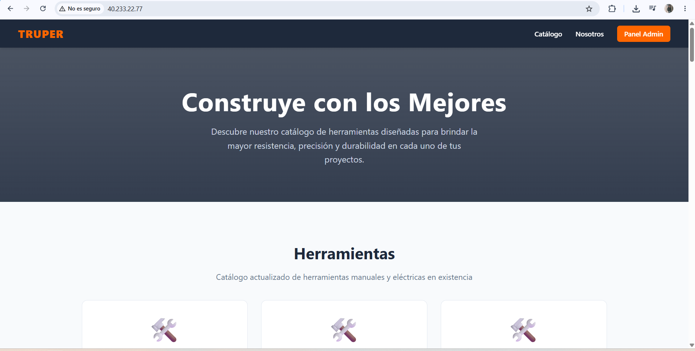
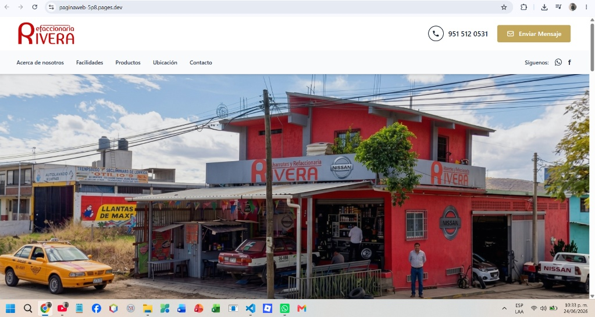
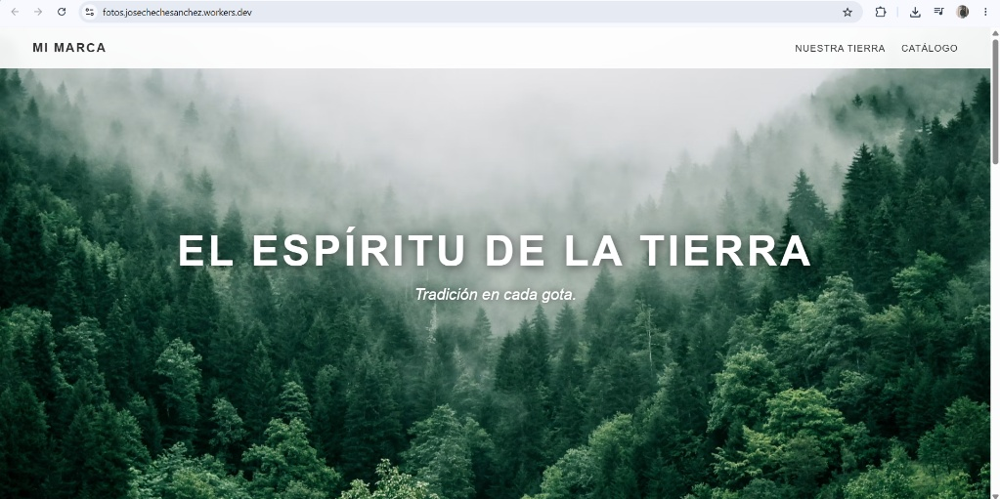

José Luis Sánchez Isidro. Transformando la lógica algorítmica en soluciones digitales robustas, desde arquitecturas backend hasta interfaces de usuario optimizadas.

Sistema de catálogo de herramientas alojado en un servidor VPS. Cuenta con panel de administración para gestionar productos y presentación al cliente.

Sitio web diseñado para un negocio local. Interfaz clara que resalta la ubicación, productos y facilita el contacto directo con los clientes.

Página web visualmente inmersiva enfocada en la presentación de marca (fotografías/catálogo). Diseño elegante con imágenes a pantalla completa.